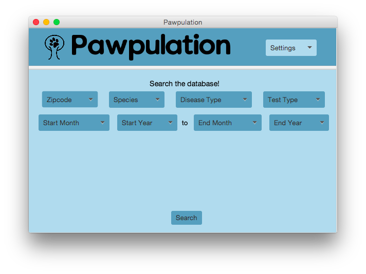
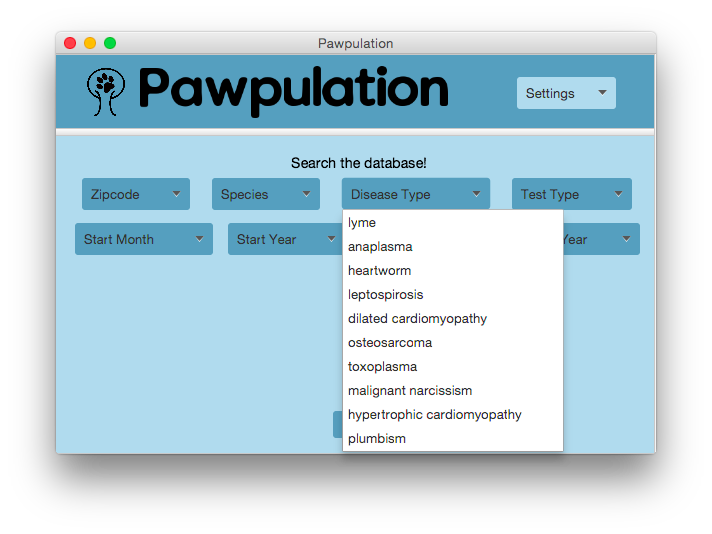
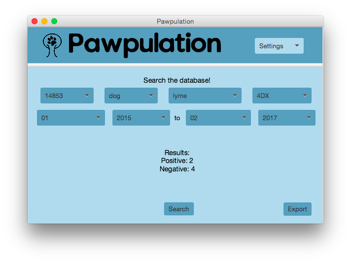

In a nutshell, I worked with a team of vets, designers, and developers to enable real-time disease surveillance and research. I created a GUI that supports searching the database, and exporting and importing data.

The repository can be found here. Read more about my experience below...
My team originally comprised of my 3 developer friends and me. Our interdisciplinary team of 8, consisting of 3 vet school students and 1 Masters of Engineering student - all strangers - and us, came together because we were all drawn to the notion of a disease tracker for animals.
Currently, if a human patient goes into a hospital and is diagnosed with a disease, that data point is recorded and added to epidemiological databases. But in companion animal medicine in the United States, data collection is lacking. There are limited, accessible databases for some infectious diseases, reports on diseases are distributed infrequently, and for some diseases, data entry is even optional.
We envisioned a software that would streamline data entry (by parsing JSON) and upload data points to a database on a server. This database would update in real-time. That way, vets and researchers can easily search the database using criteria such as zip code and disease to track and prevent the spread of disease. Furthermore, the user can export data to CSV form, compatible, raw data for statistical analysis. Pharmaceutical companies, for example, could use this feature to develop more timely products and combat diseases quicker.
Our prototype allows data to be easily imported, exported, and searched. Unfortunately, we were not able to set up a database server to collect this data. Instead, the data imported was stored inside an ArrayList. Ideally, the data would be added to an SQL database for time-efficient and space-efficient retrieval. I mainly worked on the "database": adding data, filtering searches, returning a summary of data, and updating the client's dropdown boxes programmatically based on available data.


From this hackathon, I realized that engineering a product requires much much more than knowledge of programming languages and data structures.
Engineering first requires a vision. For a majority of the time, I was extremely focused on coding to completing the product. In retrospect, a complete product is great, but only a well thought-out product will truly benefit people. That's why listening to the vet's discussions on feasibility (whether the data should be manually entered or import automatically), the business model (whether the market was the public, vets, or companies), etc. were so valuable for me. Although the hackathon was extremely draining (the developers stayed up from 10AM to 4AM the next day), I was motivated because of the vet students' passion. I originally participated in the hackathon for the experience - to challenge myself and see how quickly I could think and code in a pressurized-situation.
I came out of the hackathon enlightened, understanding the importance of thinking about all aspects of a product and sincerely striving to create an impact with it, not just perfecting and optimizing the technical side.
My team is currently looking into ways this product can be developed further. Although unlike other hackathon projects, this project is not geared towards the general public as a market, this could be of great value to researchers. I hope that a revamped product of this kind can really be used to stop disease outbreaks and benefit animal and human lives.